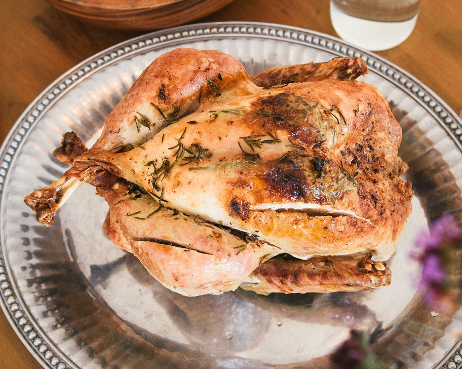

Roasted Rosemary Chicken

Description
A simple and low-maintenance Italian style chicken roasting recipe.
Ingredients
- 1 whole chicken (~3 lbs)
- 3-6 cloves of garlic
- 2 sprigs of rosemary
- Salt & pepper
- Light olive oil
Steps
- Pre-heat the oven to 350 degrees Fahrenheit.
- Rinse and dry the chicken, and get rid of any guts in the cavity.
- Cover with light olive oil, and add salt and pepper to taste (in the cavity, too).
- Fill the cavity of the chicken with the garlic cloves and one roesmary sprig.
- Pull the leaves off of the other sprig and sprinkle them on the chicken.
- Put the chicken in the middle of the oven, in a roasting pan, breast side down.
- Turn the chicken over once every 30 minutes, basting with the oil in the pan. The total cook time is about 30 minutes per pound.